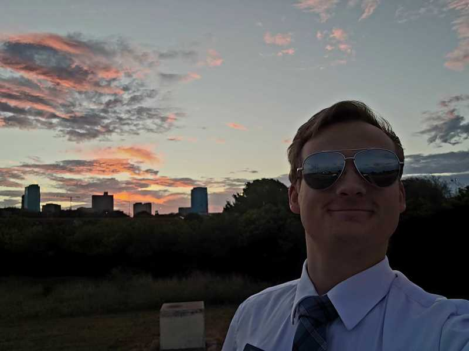

Max Taylor Clements | WDD 130
Hello I am Max Clements, I am 25 and live in a small logging town in Oregon, United States. I Love to draw and sketch on paper and my Wacom tablet. I am currently going to school in the hopes to become a director in childrens animations, with BYU tv.